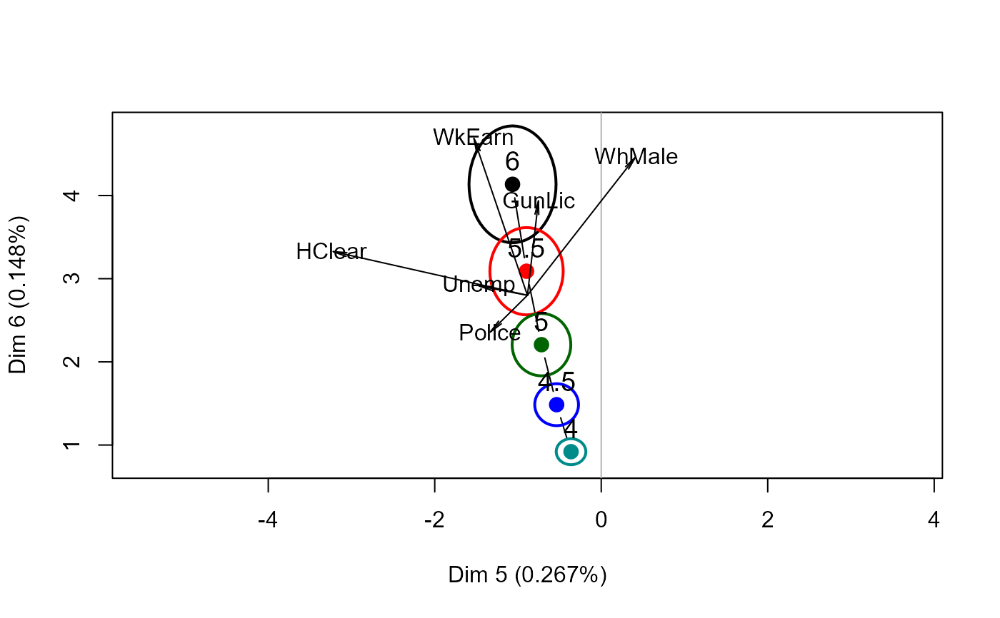
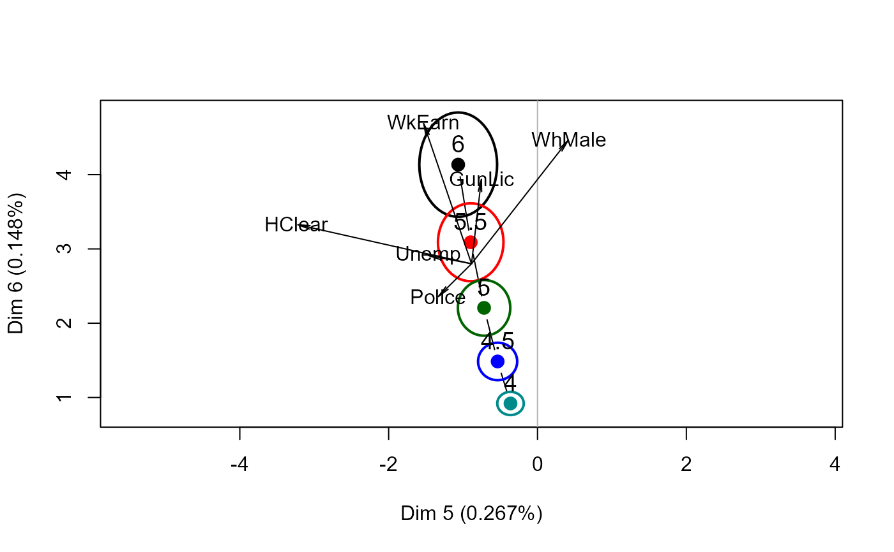

The data set Detroit was used extensively in the book by Miller
(2002) on subset regression. The data are unusual in that a subset of three
predictors can be found which gives a very much better fit to the data than
the subsets found from the Efroymson stepwise algorithm, or from forward
selection or backward elimination. They are also unusual in that, as time
series data, the assumption of independence is patently violated, and the
data suffer from problems of high collinearity.
As well, ridge regression reveals somewhat paradoxical paths of shrinkage in univariate ridge trace plots, that are more comprehensible in multivariate views.
Format
A data frame with 13 observations on the following 14 variables.
PoliceFull-time police per 100,000 population
UnempPercent unemployed in the population
MfgWrkNumber of manufacturing workers in thousands
GunLicNumber of handgun licences per 100,000 population
GunRegNumber of handgun registrations per 100,000 population
HClearPercent of homicides cleared by arrests
WhMaleNumber of white males in the population
NmfgWrkNumber of non-manufacturing workers in thousands
GovWrkNumber of government workers in thousands
HrEarnAverage hourly earnings
WkEarnAverage weekly earnings
AccidentDeath rate in accidents per 100,000 population
AssaultsNumber of assaults per 100,000 population
HomicideNumber of homicides per 100,000 of population
Details
The data were originally collected and discussed by Fisher (1976) but the
complete dataset first appeared in Gunst and Mason (1980, Appendix A).
Miller (2002) discusses this dataset throughout his book, but doesn't state
clearly which variables he used as predictors and which is the dependent
variable. (Homicide was the dependent variable, and the predictors
were Police ... WkEarn.) The data were obtained from
StatLib.
A similar version of this data set, with different variable names appears in
the bestglm package.
References
Fisher, J.C. (1976). Homicide in Detroit: The Role of Firearms. Criminology, 14, 387--400.
Gunst, R.F. and Mason, R.L. (1980). Regression analysis and its application: A data-oriented approach. Marcel Dekker.
Miller, A. J. (2002). Subset Selection in Regression. 2nd Ed. Chapman & Hall/CRC. Boca Raton.
Examples
data(Detroit)
# Work with a subset of predictors, from Miller (2002, Table 3.14),
# the "best" 6 variable model
# Variables: Police, Unemp, GunLic, HClear, WhMale, WkEarn
# Scale these for comparison with other methods
Det <- as.data.frame(scale(Detroit[,c(1,2,4,6,7,11)]))
Det <- cbind(Det, Homicide=Detroit[,"Homicide"])
# use the formula interface; specify ridge constants in terms
# of equivalent degrees of freedom
dridge <- ridge(Homicide ~ ., data=Det, df=seq(6,4,-.5))
#> Warning: non-list contrasts argument ignored
# univariate trace plots are seemingly paradoxical in that
# some coefficients "shrink" *away* from 0
traceplot(dridge, X="df")
 vif(dridge)
#> Police Unemp GunLic HClear WhMale WkEarn
#> 0.00000000 24.813319 4.857380 19.272306 46.922906 56.711341 54.716585
#> 0.03901941 20.118936 3.869947 11.362456 33.071940 35.390343 31.882644
#> 0.10082082 15.414725 2.970643 6.431731 21.289465 20.775894 17.352584
#> 0.20585744 10.776320 2.207891 3.597306 12.171334 11.258278 8.750494
#> 0.40331592 6.534224 1.622736 2.128409 5.995951 5.503441 4.113455
pairs(dridge, radius=0.5)
vif(dridge)
#> Police Unemp GunLic HClear WhMale WkEarn
#> 0.00000000 24.813319 4.857380 19.272306 46.922906 56.711341 54.716585
#> 0.03901941 20.118936 3.869947 11.362456 33.071940 35.390343 31.882644
#> 0.10082082 15.414725 2.970643 6.431731 21.289465 20.775894 17.352584
#> 0.20585744 10.776320 2.207891 3.597306 12.171334 11.258278 8.750494
#> 0.40331592 6.534224 1.622736 2.128409 5.995951 5.503441 4.113455
pairs(dridge, radius=0.5)
 # \donttest{
plot3d(dridge, radius=0.5, labels=dridge$df)
# transform to PCA/SVD space
dpridge <- pca(dridge)
# not so paradoxical in PCA space
traceplot(dpridge, X="df")
biplot(dpridge, radius=0.5, labels=dpridge$df)

#> Vector scale factor set to 2.864948
# show PCA vectors in variable space
biplot(dridge, radius=0.5, labels=dridge$df)
#> Vector scale factor set to 0.8511932
# }
# \donttest{
plot3d(dridge, radius=0.5, labels=dridge$df)
# transform to PCA/SVD space
dpridge <- pca(dridge)
# not so paradoxical in PCA space
traceplot(dpridge, X="df")
biplot(dpridge, radius=0.5, labels=dpridge$df)

#> Vector scale factor set to 2.864948
# show PCA vectors in variable space
biplot(dridge, radius=0.5, labels=dridge$df)
#> Vector scale factor set to 0.8511932
# }